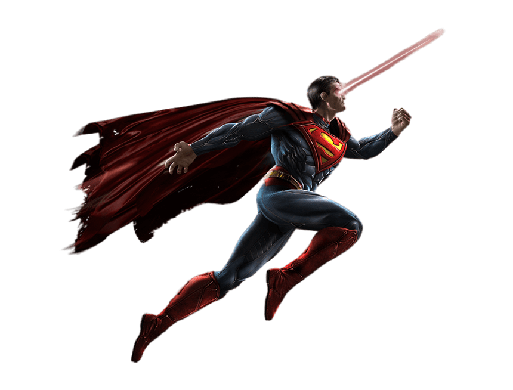

Superman is a superhero who appears in American comic books published by DC Comics. The character was created by writer Jerry Siegel and artist Joe Shuster, and debuted in the comic book Action Comics #1 (cover-dated June 1938 and published April 18, 1938). Superman has been adapted to a number of other media, including radio serials, novels, films, television shows, theater productions, and video games. Superman was born on the fictional planet Krypton and was named Kal-El. When he was a baby, his parents sent him to Earth in a small spaceship moments before Krypton was destroyed in a natural cataclysm. His ship landed in the American countryside, near the fictional town of Smallville. He was found and adopted by farmers Jonathan and Martha Kent, who named him Clark Kent. Clark developed various superhuman abilities, such as incredible strength and impervious skin. His adoptive parents advised him to use his abilities for the benefit of humanity, and he decided to fight crime. To protect his personal life, he changes into a colorful costume and uses the alias "Superman" when fighting crime. Clark resides in the fictional American city of Metropolis, where he works as a journalist for the Daily Planet. Superman's supporting characters include his love interest and fellow journalist Lois Lane, Daily Planet photographer Jimmy Olsen and editor-in-chief Perry White, and enemies such as Brainiac, General Zod, and his archenemy Lex Luthor. Superman is the archetype of the superhero: he wears an outlandish costume, uses a codename, and fights evil with the aid of extraordinary abilities. Although there are earlier characters who arguably fit this definition, it was Superman who popularized the superhero genre and established its conventions. He was the best-selling superhero in American comic books until the 1980s.
Jerry Siegel and Joe Shuster met in 1932 while attending Glenville High School in Cleveland and bonded over their admiration of fiction. Siegel aspired to become a writer and Shuster aspired to become an illustrator. Siegel wrote amateur science fiction stories, which he self-published as a magazine called Science Fiction: The Advance Guard of Future Civilization. His friend Shuster often provided illustrations for his work. In January 1933, Siegel published a short story in his magazine titled "The Reign of the Superman". The titular character is a homeless man named Bill Dunn who is tricked by an evil scientist into consuming an experimental drug. The drug gives Dunn the powers of mind-reading, mind-control, and clairvoyance. He uses these powers maliciously for profit and amusement, but then the drug wears off, leaving him a powerless vagrant again. Shuster provided illustrations, depicting Dunn as a bald man.
Krypton is a fictional planet appearing in American comic books published by DC Comics, most commonly appearing or mentioning in stories starring the superhero Superman as the world he came from. The planet was created by Jerry Siegel and Joe Shuster, and was named after the chemical element krypton. The planet was first mentioned in Action Comics #1 (June 1938) and made its first appearance in Superman #1 (1939). Krypton is also the native world of Supergirl, Krypto the Superdog, Beppo the Super-Monkey, Power Girl (in her case, an alternate-universe version designated "Krypton-Two"), and the supervillain General Zod. It has been consistently described as having been destroyed shortly after Superman's escape from the planet, although the exact details of its destruction vary by time period and writers. Kryptonians were the dominant species on Krypton. Krypton also makes an appearance in several television series such as Adventures of Superman, Lois & Clark: The New Adventures of Superman, Superman: The Animated Series, Smallville, Supergirl, and Krypton. Krypton appears in the 1978 film Superman, the 2006 film Superman Returns, and the 2013 film Man of Steel, set in the DC Extended Universe.
